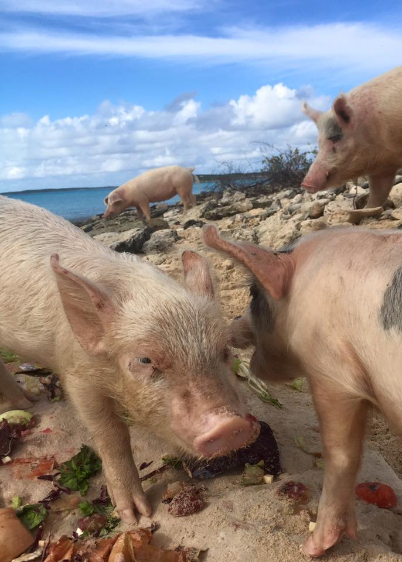

After stuffing myself with turkey and pumpkin pie, I hopped on a plane to the Bahamas. I skipped right past Nassau, where most people visit, and landed on a small island called Exuma. I didn't have much time here but you can really tell the island living is real and chill here.

Ok, so this was pretty exciting. There is a cruise that takes you about 30 minutes away from Exuma to this inhabited island where only pigs live. Obviously the point of the tour is to feed these pigs so they don't starve to death. Honestly it was quite terrifying to see HUGE pigs swimming full speed toward the boat. But here are some little piglets you can cuddle and hold if you want, they were the cutest.